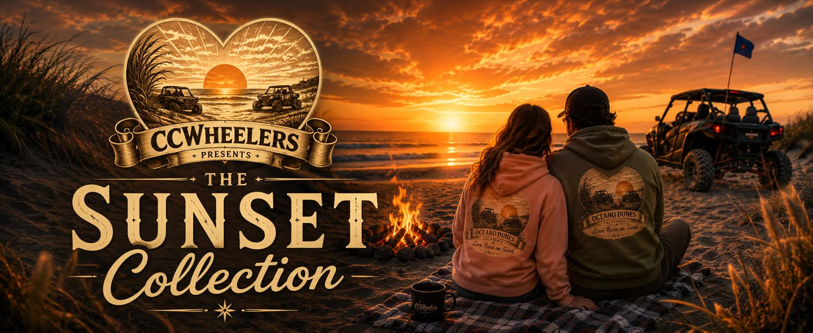
Oceano Dunes Apparel. Six Designs, One Story.
Not another rail buggy shirt. The Sunset Collection is about the couple watching the sun go down over the water, the campfire after the ride, and the walk on the beach when the wind finally lays down. Printed on the crop hoodie and made for the people who come back to Oceano Dunes every season.
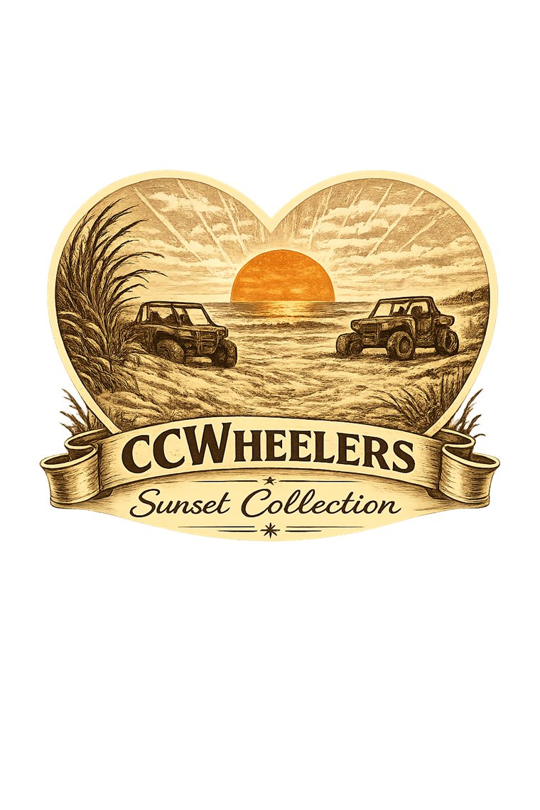
One Badge Up Front. Your Story On The Back.
Every shirt in the collection carries the same badge on the front, so the line reads as one set. The back is where each design goes its own way. Same dune grass, same sun, same ribbon banner, same heart, every time. Once you have seen one, you will know the whole collection on sight.
All Six, Side By Side
Tap through the collection below. Every design is printed on the crop hoodie in your choice of colors, and each one is numbered as part of the set of six.
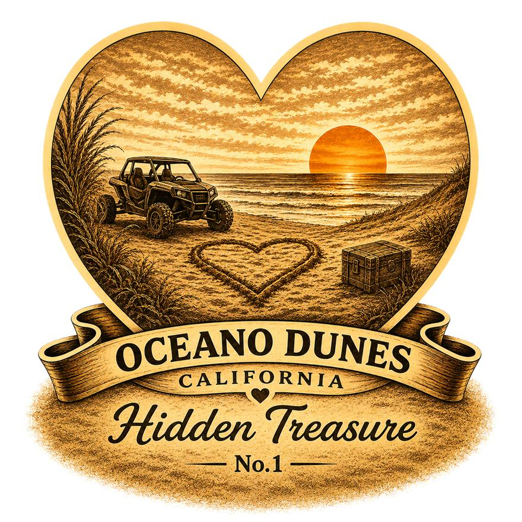
Hidden Treasure
A buggy parked at the water line, a heart drawn in the sand, and whatever it is you came out here to find.
Sizes and colors are chosen at checkout. Printed and shipped by our print partner, usually within a week.
The Collection
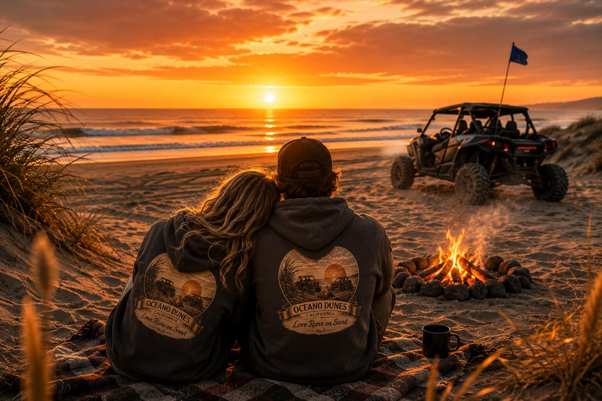
The Ride Is Only Half Of It
Anybody can put a buggy on a shirt. What we kept coming back to was everything around the riding. Setting up camp before the fog burns off. The fire going while somebody digs out the marshmallows. Walking down to the water when the wind finally lays down and the whole beach turns orange.
That is what the six designs are about, and why the same sunset shows up on every one of them.
The Collection In The Wild
The crop hoodie in every color, worn where it is meant to be worn. Swipe through, or use the arrows.
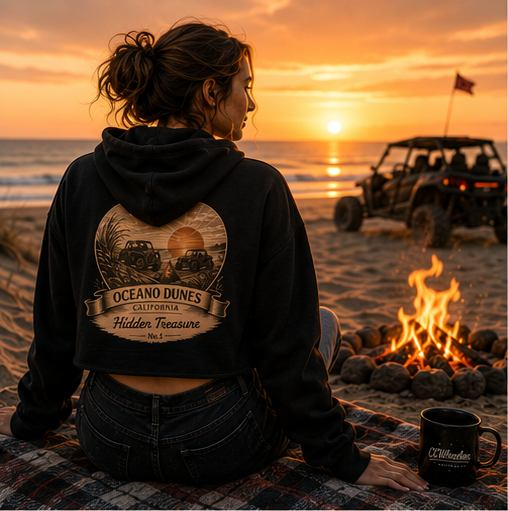
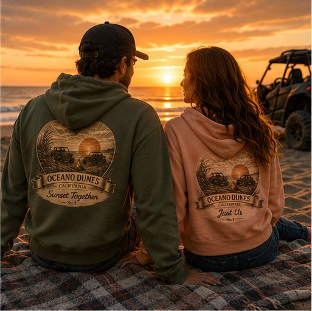
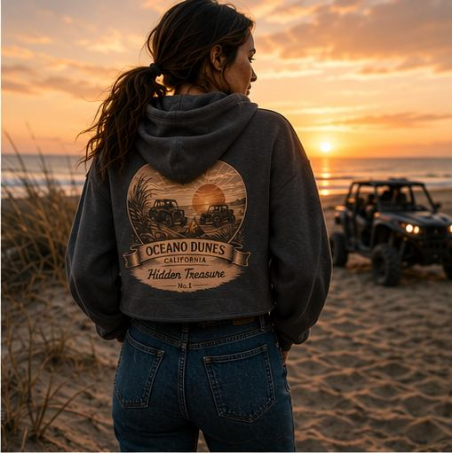
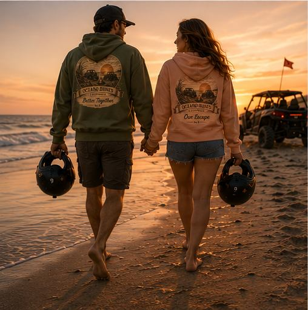
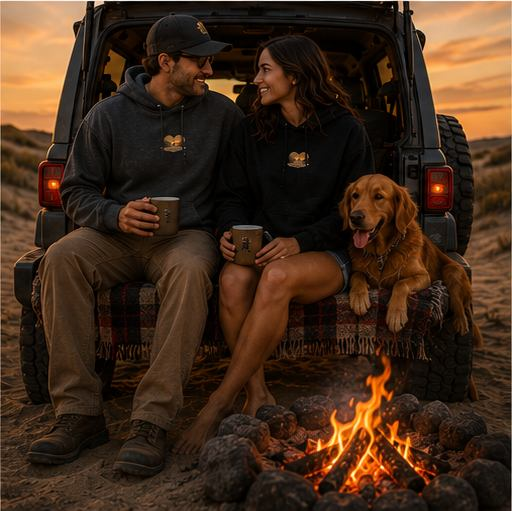
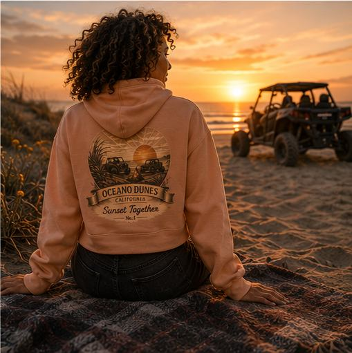
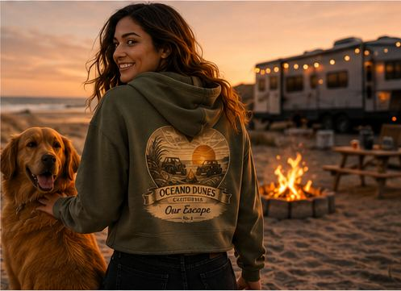
What You Get
A crop hoodie with the Sunset Collection badge printed on the front and your chosen design printed large across the back. Both prints are included on every shirt.
Sizes & Colors
Four colors: black, charcoal, military green and peach. Sizes and color are chosen on the product page at checkout. Pricing is the same across the collection no matter which design you pick.
Made To Order
Nothing sits in a warehouse. Each shirt is printed after you order it, which keeps the run small and means we can add designs without guessing at inventory.